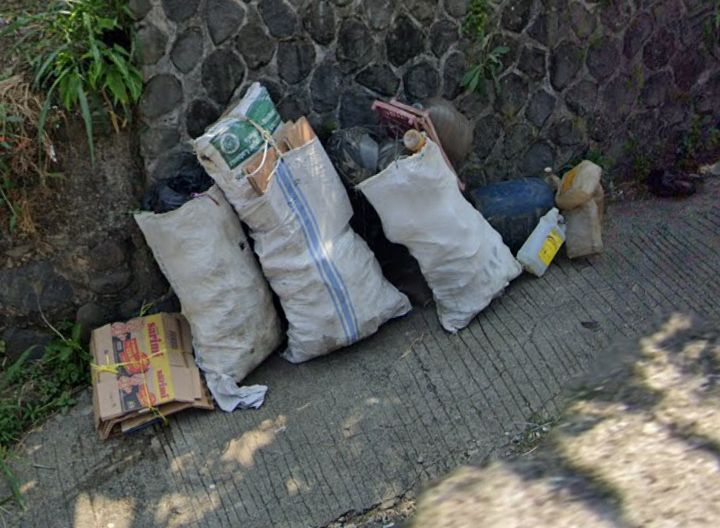
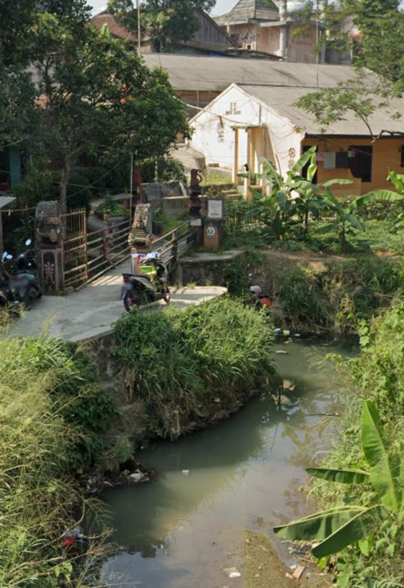
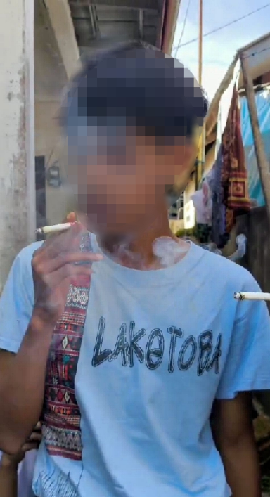

Tugas Praktek IPAS - Artikel Lingkungan Hidup
Pencemaran lingkungan adalah masuknya sampah atau komponen lain ke dalam lingkungan yang menyebabkan kualitas lingkungan menurun dan membahayakan kehidupan makhluk hidup. Pencemaran ini dapat terjadi di darat, air, dan udara.

Jalan raya seharusnya menjadi urat nadi transportasi yang bersih dan nyaman. Namun, tengoklah ke pinggir jalan atau trotoar di sekitar kita. Seringkali, kita justru disuguhi pemandangan puntung rokok, plastik pembungkus makanan, hingga masker bekas yang berserakan. Masalah ini bukan sekadar soal "mata yang tidak nyaman," melainkan masalah lingkungan yang sistemik.

Jika jalanan adalah "pintu masuk", maka sungai dan laut adalah "ujung pelarian" bagi sampah-sampah kita. Begitu sampah menyentuh air, masalahnya menjadi jauh lebih sulit untuk dikendalikan dan dampaknya meluas hingga ke meja makan kita.

Ketika kita bicara soal polusi udara, pikiran kita sering kali langsung tertuju pada cerobong pabrik atau knalpot kendaraan. Padahal, ada polutan berbahaya yang sering kita temui di sekitar kita yaitu: asap rokok.